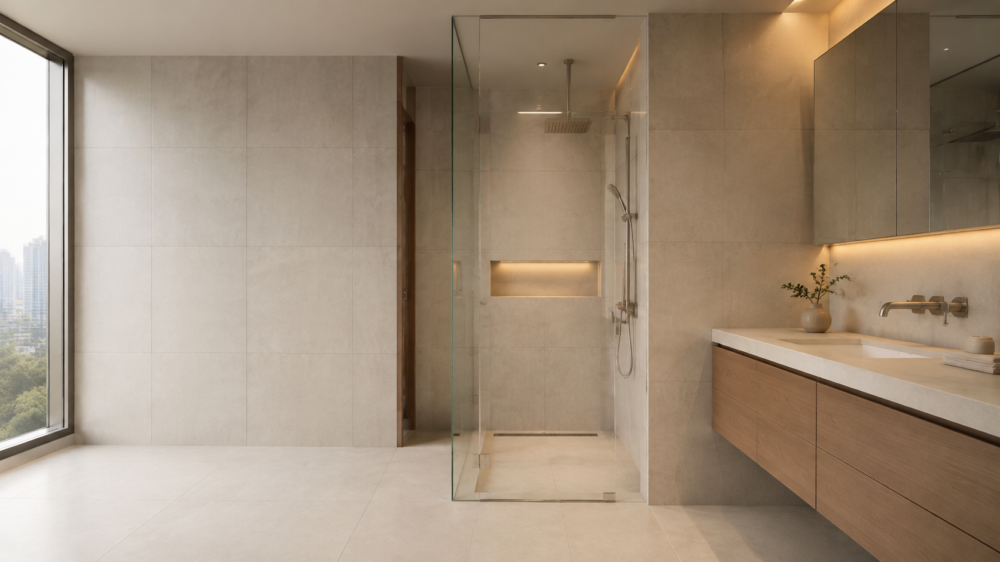
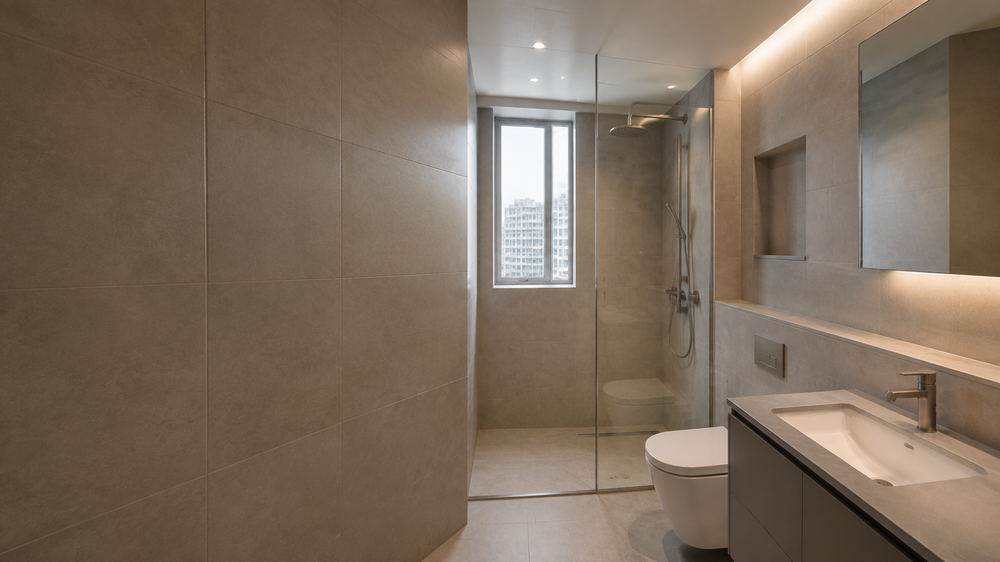
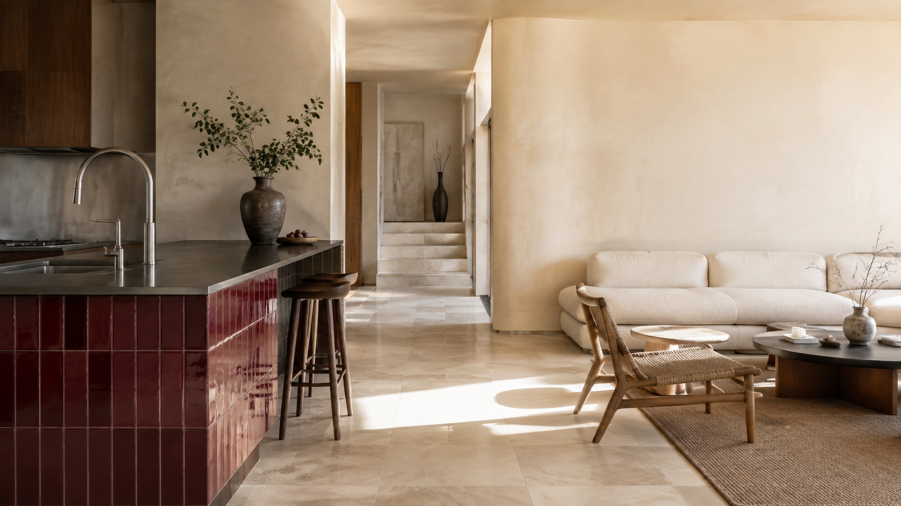
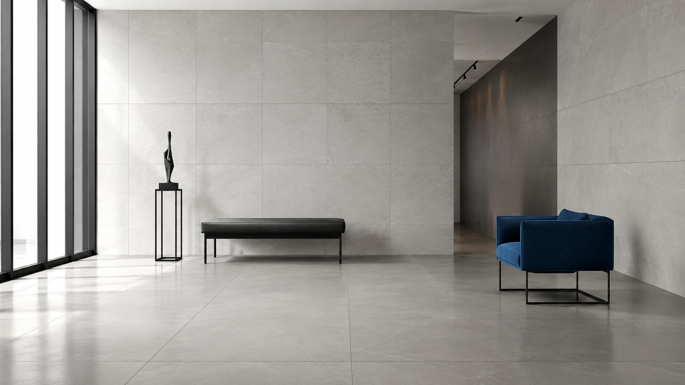
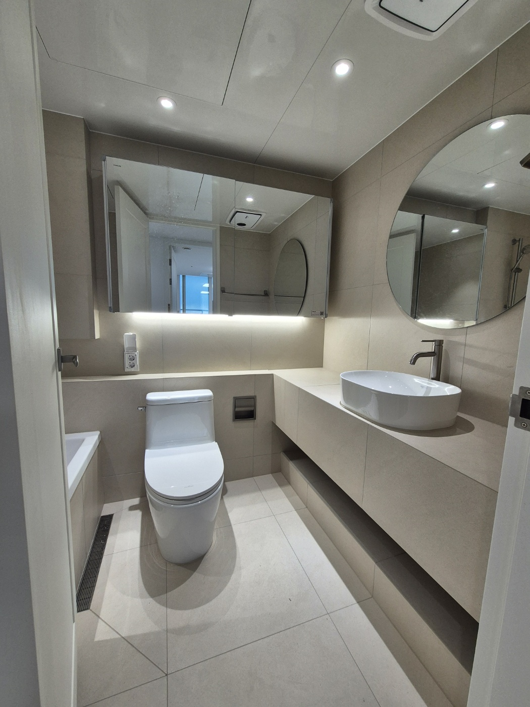

DAEJEON · SEJONG / TILE & BATH
공간보다 먼저,
시공의 기준을
세웁니다.
욕실 리모델링부터 주방·바닥·상업 공간 타일까지.
보이는 디자인과 보이지 않는 바탕을 함께 생각합니다.
PROJECT 01 HOME CONCEPT

욕실 · 주방 · 바닥 · 상업 공간
대전 · 세종 및 인근 지역
현장 확인 후 항목별 견적 안내
01 SPACE & SERVICE
공간의 인상을 바꾸는 일,
사용하는 시간을 바꾸는 일.
타일은 공간에서 가장 넓게 보이고, 가장 오래 사용하는 마감재입니다. 취향에 맞는 표면을 고르는 일부터 그 아름다움이 오래가도록 시공하는 과정까지 함께 살핍니다.
공간별 서비스 살펴보기 ↘

02 MATERIAL & MOOD
표면의 질감이
공간의 온도를
결정합니다.
빛을 부드럽게 받는 무광 포세린, 차분한 석재의 결, 공간을 정돈하는 큰 타일. 유행만 좇기보다 매일 보아도 편안한 조합을 찾습니다.
Warm Stone
Calm Gray
Natural Taupe
03 OUR STANDARD
좋은 마감은
보이지 않는 과정에서 시작됩니다.
완성된 공간의 인상은 타일만으로 결정되지 않습니다. 바탕의 상태, 물이 흐르는 방향, 타일의 선과 면, 모서리의 작은 접점까지 여러 과정이 쌓여 하나의 공간이 됩니다.
바탕 확인
마감 전에 기존 벽과 바닥의 상태를 먼저 확인합니다.
BASE방수와 배수
물을 사용하는 공간은 보이는 면만큼 물의 흐름이 중요합니다.
WATER수평과 수직
타일의 선과 면이 흐트러지지 않도록 기준을 잡습니다.
LEVEL접착과 양생
현장과 자재 조건에 맞는 과정과 기다리는 시간을 지킵니다.
BOND모서리와 줄눈
시선이 오래 머무는 접점과 간격까지 정돈합니다.
DETAIL04 REAL PROJECTS
현장에서
완성한 공간.
광고용 공간 이미지와 실제 시공 기록을 구분합니다. 현장의 조건과 작업 과정, 가공하지 않은 추가 사진은 각 블로그 원문에서 확인할 수 있습니다.
원본 시공 기록 보기 ↗
포세린과 젤리지 타일,
유리블록으로 나눈 욕실
↗
03 / CHEONAN유리블록으로 나눈 욕실
욕조 매립 선반 · 하프 조적 · 에폭시 마감
차콜과 웜그레이가 만드는
차분한 욕실의 깊이
↗
차분한 욕실의 깊이
긴 선반 · 매립 조명 · 욕조 공간
※ 첫 이미지는 블로그에서 확보한 실제 시공 사진이며, 상세 공정과 추가 원본은 연결된 게시물에서 확인할 수 있습니다.
05 HOW WE WORK
상담부터 완성까지,
과정을 알기 쉽게.
- 01사진 상담
공간과 문제 부위를 먼저 확인합니다.
- 02현장 확인
바탕과 설비, 필요한 공사 범위를 살핍니다.
- 03범위 · 견적
포함 항목과 선택 사항을 나누어 안내합니다.
- 04자재 · 일정
공간에 맞는 조합과 작업 순서를 정합니다.
- 05시공 · 확인
공정을 진행하고 완료 상태를 함께 확인합니다.
06 BEFORE CONSULT
상담 전에
많이 묻는 질문.
욕실 리모델링은 어떤 순서로 진행되나요?＋
사진 상담과 현장 확인 후 공사 범위, 자재, 일정, 견적을 협의하고 철거·설비·방수·타일·기구 설치와 검수 순으로 진행합니다. 실제 순서는 현장 조건에 따라 달라집니다.
견적을 받으려면 무엇을 준비해야 하나요?＋
현장 지역, 공간 전체 사진, 바꾸고 싶은 부분, 희망 시기를 보내 주시면 첫 상담이 더 정확해집니다.
타일 한두 장만 부분적으로 교체할 수 있나요?＋
동일 타일 보유 여부와 주변 타일의 들뜸, 바탕 상태에 따라 달라집니다. 전체와 문제 부위 사진을 함께 보내 주세요.
공사 기간과 비용은 어떻게 정해지나요?＋
공간 크기뿐 아니라 철거 범위, 바탕·방수 상태, 타일 규격, 설비와 도기 교체 여부에 따라 달라지므로 현장 확인 후 항목별로 안내합니다.
START YOUR SPACE
바꾸고 싶은
공간이 있으신가요?
공간 사진과 지역, 원하는 공사 내용을 보내주시면
상담에 필요한 내용을 먼저 안내해 드립니다.
사진으로 상담하기 ↗
전화 상담 ↗
연락처와 운영 정보는 브랜드 확정 후 연결됩니다.